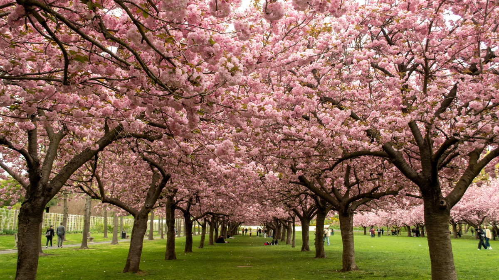

Spring and summer are perhaps the months that pass by the quickest, yet they often come with struggles.
Compared to the carefree lifestyles manifested in the winter months, you instead find more students at the library and an abundance of rain and fog.
The buzz grows quiet, so quiet that you can hear a pin drop, and the world begins to close in around you–where yin engulfs yang; any sense of stability shatters.
But that is all temporary, for hidden beauties of flora begin to reveal themselves, and, in my humble opinion, nowhere else are they more prominent than in New York.
Prospect Park becomes the perfect refuge, with its vast fields of grass that harbor life; the Brooklyn Botanical Garden welcomes you with its sophisticated order of cherry blossom trees in full bloom, waiting for you to be rapt in its beauty.
The garden's flowers are so lovely that you could imagine yourself as a princess in a distant kingdom, light, jovial, and carefree.
Such beauty allows you to crawl past the darkness, as slow as you need, toward a lighter path.
Rainy Spring Days
The Beauty of the Brooklyn Botannical Garden

The Whispers of the Past and the Promise of the Future